G5/G6 Connection
Use only one device⌁
If you have a receiver it's now time to decide which device you will want to use to start and stop your sensors. Use only one and make sure the other device is either turned off or stored in a shielding bag (or a microwave oven turned OFF). When starting a sensor, do not let the other device interact before warm-up is complete.
At this point make sure you have a sensor inserted (already started or a new one not started yet) with the transmitter attached. You will not be able to connect to the transmitter if it is not attached to the sensor.
Check connection⌁
Reference documentation is here.
Menu / System Status


Once on this page (that does not refresh real time) swipe leftwards to display G5/G6 Status
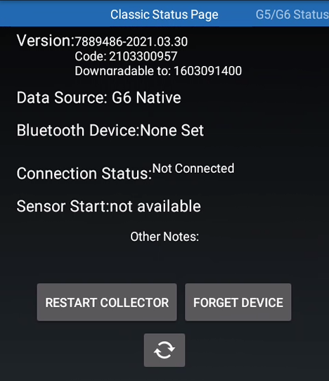
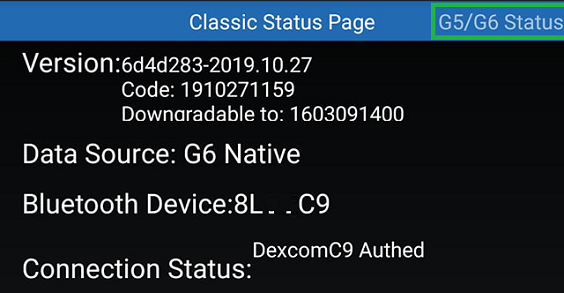
xDrip+ will first try try to find the transmitter. Keep it close to the phone and leave the app on this page.
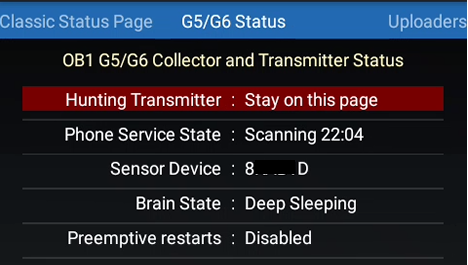
Connection status showing Authenticated means the device has been found, it doesn't mean it's connected now as the transmitter is only active for a few seconds every 5 minutes.
xDrip+ will try to connect to the transmitter, and for this it will wait for activity from it.
At this point you will see the scan starting time and the equivalent of time passed since you tried to connect. If the transmitter connects, scanning time shouldn't be more than 5 minutes but initial pairing might take up to 20 minutes.
Note
The sensor will communicate every 5 minutes, the rest of the time it will be sleeping.
Last connected should not be more than 5 minutes. If it doesn't connect check your G5 or G6 settings.
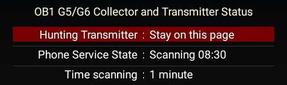
For Android versions 10 and above, you will have to allow the pairing request for a new transmitter.
Once connected to the transmitter you will see data coming in. Last connected should remain a value less than 5 minutes ago and the brain state deep sleeping is normal.
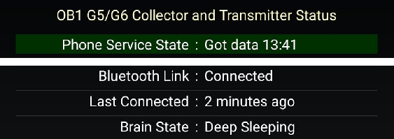
When running, a typical advanced status will look like this, with last connected value always less than 5 minutes.
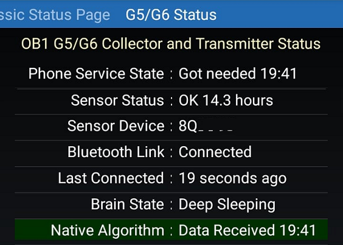
Do not consider all error messages contents when your transmitter is not correctly connected.
You might have connection issues when you can see either one or more of these information:
- Bluetooth link is disconnected
- Last connected a long time ago
- Phone trying to connect
- Items queued
In this last case you want to review your G5/G6 parameters and delete queued items.
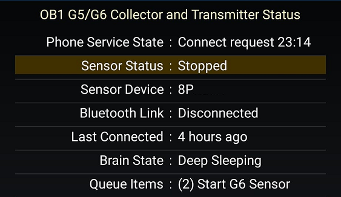
Note that preemptive restarts should be disabled for Firefly transmitters. Older transmitters starting by 80 or 81 will support it but make sure to know the impact on the measurement before enabling it.
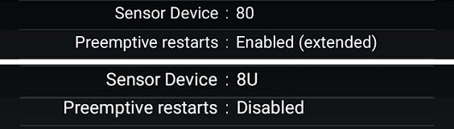
When connected you can get battery information from the transmitter: touch the battery last queried line.
Battery level is retrieved automatically twice a day. Monitor your battery regularly.
Only voltage B is important for G6, resistance (if visible) has no useful meaning.
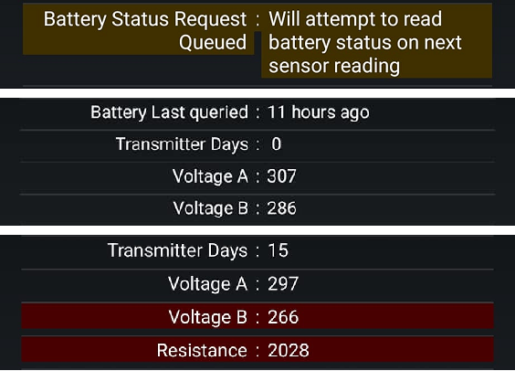
Newer firmware will require you to update xDrip+, if the latest pre-release still shows the message, please report the version.
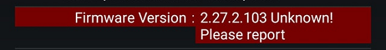
Authentication errors might be a sign you missed the initial pairing request. You can force it changing the transmitter ID, confirm with Ok, then put the correct ID and confirm with Ok. A pairing request should appear in the next 5 minutes.
Once found it will try to connect to it. If xDrip+ doesn't find it, check again the transmitter code, make sure no other device is connected or trying to connect to the transmitter.
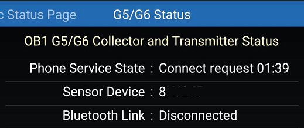
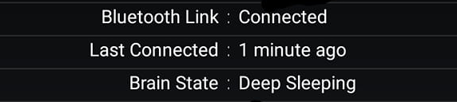
Command queue⌁
Commands are processed by the transmitter one by one when received. Interactions occur every 5 minutes so it might take some time before they get processed. If you still see them pending after 20 minutes you might want to check connection and then delete them manually.
Do not attempt to send start or stop commands if the queue is not empty.
From the main view, touch the syringe (treatments) icon.

Long touch the microphone icon.
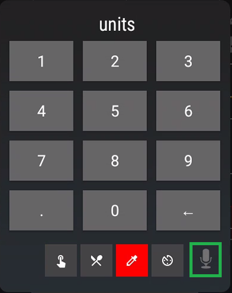
Write clear transmitter queue then OK.
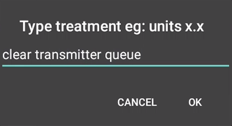
Hard reset transmitter⌁
You can reset the internal day counter of your G5 or G6 transmitter. Only old (80 and 81 starting transmitter ID) or rebatteried G6 allow this option. Only running your transmitter in native mode after it's expired requires hard reset.
Warning
Hard resetting a non-rebatteried Firefly transmitter will brick it without possible recovery.
With recent xDrip+ versions you don't need to be in engineering mode to perform this operation.
Make sure you have a good connection and nothing in the queue before resetting the transmitter.
Info
Hard resetting will not improve a transmitter low battery condition.
Touch the syringe icon on the main graph.
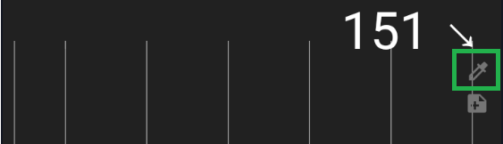
Long touch the microphone icon.
Write hard reset transmitter then OK.
Be patient, il will take up to 20 minutes.
Firefly transmitters⌁
Newer G6 transmitters have a very different firmware than the original ones.
You can recognize an old G6 transmitter by its serial code starting by 80 or 81.
Its firmware is version 1.6.5.25 or below.
Old transmitters will allow you to:
- Replace the battery and reset the transmitter days counter
- Receive raw data from your sensor
- Use the xDrip+ calibration algorithm
- Restart the sensor using xDrip+
New transmitters called Firefly have a letter in the serial code after the 8: like 8G, 8P,... 8Y and so on.
- You cannot replace the battery or reset the transmitter days
- They do not send raw data
- In order to restart the sensor you need to physically extract the transmitter from the sensor